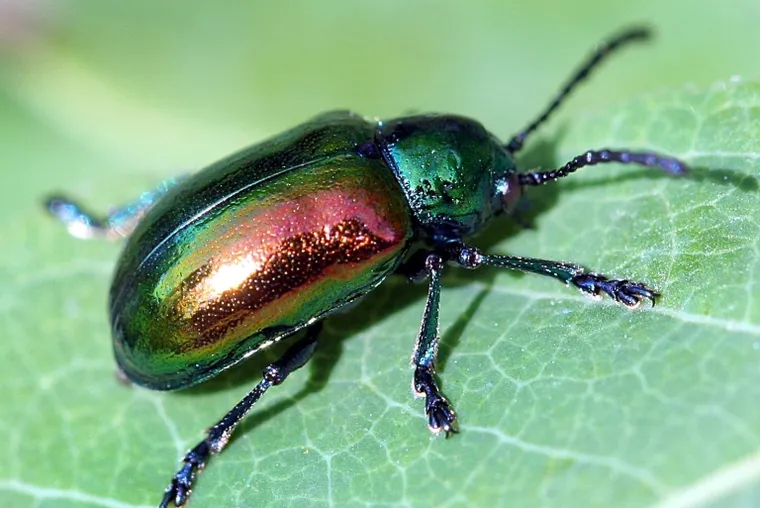

PIA
PIA

featured this week
Dogbane Beetle
Chrysochus auratus
Found across North America, the Dogbane Beetle is one of the most iridescently beautiful insects on the continent. Its shell shifts between copper, green, and blue depending on how light hits it — structural color, not pigment. It feeds exclusively on dogbane and milkweed plants, which makes it a quiet specialist in a world that rewards generalists.